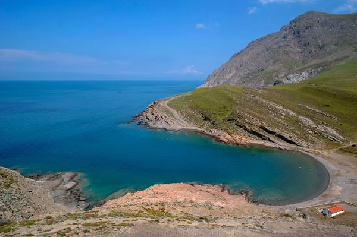
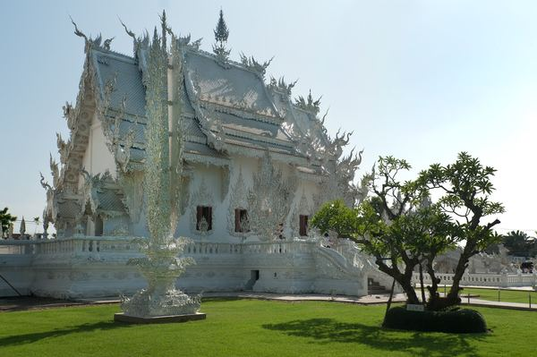
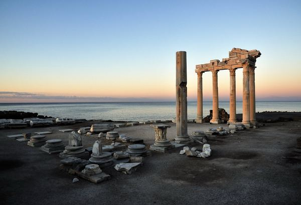
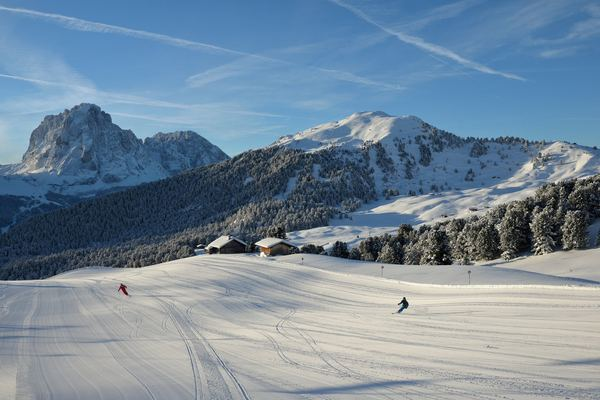
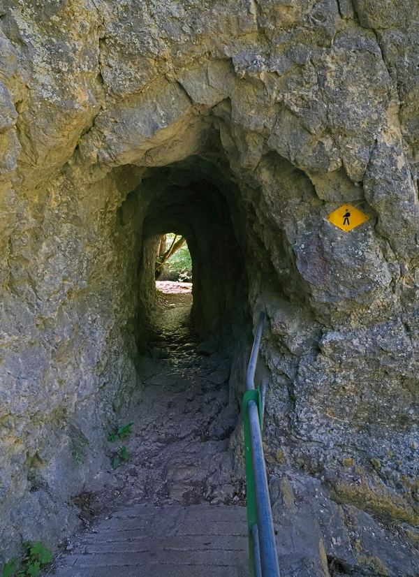

Every scattered photo, every lost timestamp — reassembled into one story. Scroll to watch it happen.
Every photo's own embedded EXIF — timestamp and GPS — read directly, no side-channel metadata. The foundation everything else sits on.
Photos close in time and space merge into one event. DBSCAN over a joint time/geo distance — a family lunch stays one moment, not six.
A pretrained vision-language model describes each event in one line — inference only, no fine-tuning, just a second pair of eyes on the moment.
Faces detected, embedded, and clustered into people across the whole set — so "who was there" survives even when the timestamp doesn't.

Beach day, reconstructed from 14 photos
Temple festival, 3 people recognized

Undated set, faces matched anyway

Ruins at golden hour, clustered from 6 shots
Golden Temple, one caption for eleven photos

New Year on the slopes, place resolved from GPS alone

Every fragment, finally in order
pipeline stages — Extract, Cluster, Caption, Recognize
face-clustering precision, measured on 230 faces the model never trained on
photos silently dropped — every one becomes an event, dated or not
Timestamps, GPS, faces — most of it is still sitting in the files. This just reads it back.
Reconstruct your timeline →